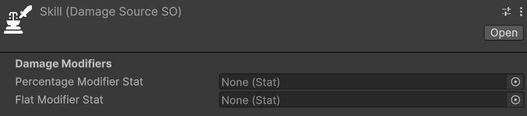
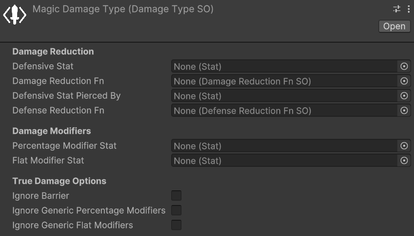
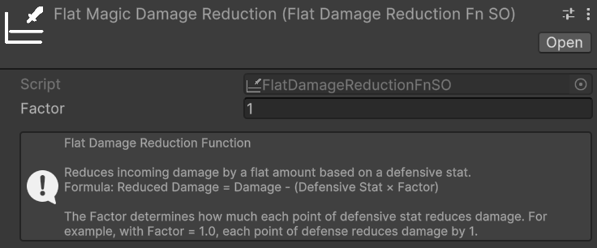
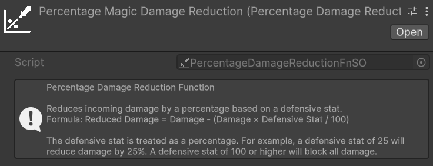
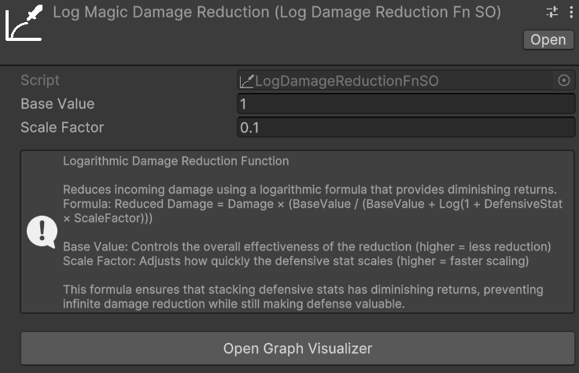
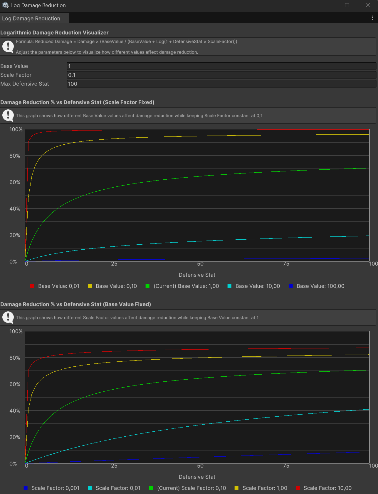
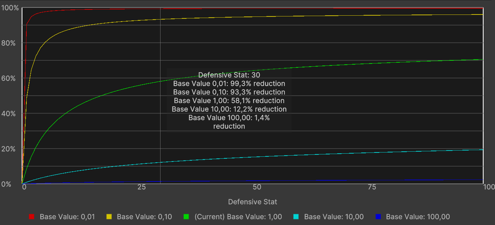
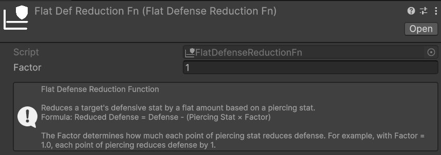
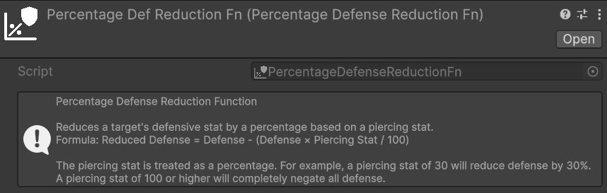
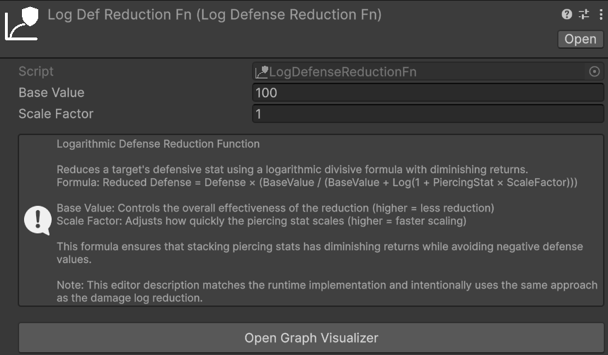

Damage
Damage Sources
Relative path: Damage Source
A DamageSource represents the source of the damage. Some examples of DamageSource could be: skill, base attack, fall damage, trap, environmental, etc. The DamageSource is used to categorize the damage and can be used in various mechanics, such as damage modifiers that only apply to specific damage sources, for triggering specific effects when taking damage from a certain source, or for tracking damage statistics based on the source.
An instance of DamageSource, in the inspector, should look like this:

There are two properties to set in a DamageSource:
- Percentage Modifier Stat: the statistic to consider in an entity to apply percentage, specific damage modifiers for this damage source. Positive values of this statistic increase the damage received from this source, while negative values decrease it.
- Flat Modifier Stat: the statistic to consider in an entity to apply flat, specific damage modifiers for this damage source. Positive values of this statistic increase the damage received from this source, while negative values decrease it.
Warning
If the entity lacks a percentage or flat damage source modifier statistic, an error will be logged when applying damage from that source. Ensure all entities with an EntityHealth component have the statistics referenced in your game's DamageSources.
A possible way to simplify the management of all the DamageSource modifier stats is to create a StatSet specifically for this purpose, and include it as a Included Stat Set in the various entities' StatSets of your game. This way, you centralize all the DamageSource modifier stats in a single StatSet, and you can easily keep track of them and ensure that they are included in all the relevant entities.
Damage Types
A DamageType represents the type of damage—such as physical, fire, ice, lightning, or damage-over-time (DoT) effects like bleeding. In the following image you cane see an example of a DamageType instance in the inspector:

You can notice that the parameters are divided in three sections:
- Damage Reduction: parameters related to the damage and defense reduction mechanics for this damage type.
- Damage Modifiers: parameters related to flat and percentage damage modifiers for this damage type.
- True Damage Options: parameters related to the true damage options for this damage type.
Note
I recall the Damage Modifiers vs. Stat-Based Damage Reduction section of the introduction documentation, where I explained the difference between damage reduction and damage modifiers.
We will now see each of these sections in detail.
Damage Reduction
The primary use case for DamageType is implementing entities with varying resistances to specific damage types. This is primarily achieved via Defensive Stats.
For each DamageType, you can define a defensive statistic that reduces incoming damage of that type. For example, an Armor stat might reduce Physical damage, while a Magic Resistance stat reduces Magic damage.
The value of the defensive stat is fed into the associated Damage Reduction Fn (function) and used to calculate the actual damage reduction. The package provides some built-in damage reduction functions, such as:
- Flat Dmg Reduction: Reduces damage by a flat amount equal to the defensive stat value multiplied by a constant.
- Percent Dmg Reduction: Reduces damage by a percentage equal to the defensive stat value.
- Log Dmg Reduction: Reduces damage in a logarithmic way based on the defensive stat value, providing diminishing returns as the stat increases.
Note
Defensive Stat and Damage Reduction Fn are optional. However, they must always be configured together: if one is set, the other must be set as well. If only one of them is assigned, a warning will be logged at runtime and the damage reduction step will be skipped for that DamageType.
Warning
If the target entity lacks the statistic referenced by Defensive Stat, an error will be logged when applying damage of that type. Ensure that all entities with an EntityHealth component have the defensive statistic referenced by the DamageTypes used in your game.
Let's see all of them in detail.
Damage Reduction Functions - Flat Dmg Reduction
Relative path: Dmg Reduction Functions -> Flat Dmg Reduction

The flat damage reduction function is the most simple and straightforward one. It reduces damage by a flat amount equal to the defensive stat value multiplied by the Factor specified via the Inspector.
For example:
- Damage Type: Magic damage.
- Defensive Stat for the Magic Damage Type: Magic Resistance.
- Damage Reduction Function for the Magic Damage Type: Flat Dmg Reduction with a scaling factor of 2.
In this case, if an entity has Magic Resistance equal to 10, and is about to take 50 Magic damage, the damage reduction will be equal to 10 (Magic Resistance) * 2 (scaling factor) = 20. So the final damage taken by the entity will be 50 (initial damage) - 20 (damage reduction) = 30 Magic damage. Clearly, this example assumes that there are no other damage modifications (e.g., neutral damage modifiers).
Use Cases: This function is best suited for games where offensive and defensive stat values are low — close to single digits or tens at most. In these scenarios, the linear relationship between the defensive stat and the damage reduction makes it trivial to ensure that no entity can completely negate incoming damage, as long as the stat values remain within a controlled range. Percentage or logarithmic reduction functions may yield imprecise or unintuitive results at such coarse-grained stat scales.
Pros:
- Damage reduction is highly predictable: knowing the defensive stat value and the factor, anyone can instantly calculate the resulting reduction.
- Simple to debug: the math is entirely transparent, making it straightforward to verify that the damage pipeline is working as expected at every step.
- Easy to balance: the linear relationship between the stat and the reduction makes it trivial to tune the factor to achieve the desired game feel.
Cons:
- Simplistic system: this function may not suit games that require nuanced or complex defensive mechanics.
- Risk of complete damage negation: if defensive stat values grow too high relative to typical damage values, entities can become entirely immune to certain damage types. This can happen, for example, if the level difference between attacker and defender is too high.
Damage Reduction Functions - Percent Dmg Reduction
Relative path: Dmg Reduction Functions -> Percentage Dmg Reduction

The percentage damage reduction function reduces incoming damage by a percentage equal to the defensive stat value. For example, if an entity has a defensive stat of 30, it will receive 30% less damage of the associated type.
Use Cases:
- Games where players can face enemies with notable level or power differences. Because the reduction is percentage-based, even a low-level entity with a small but non-zero defensive stat will always receive a proportional reduction, preventing extreme damage scenarios that would arise from large stat disparities between the attacker and the defender.
- Systems that need to be less sensitive than the Flat Dmg Reduction to the exact magnitude of offensive and defensive stats, while still remaining predictable and easy to balance.
Pros:
- Predictable and straightforward to reason about: a stat value of X directly translates to X% less damage.
- Remains effective regardless of the magnitude of incoming damage: even against a significantly stronger attacker, the same proportional reduction applies, guaranteeing that defense always has a meaningful impact.
Cons:
- High risk of damage immunity at extreme values: once the defensive stat reaches 100, the entity becomes completely immune to that damage type. This can be especially problematic for tank-oriented entities or builds designed to stack defensive stats.
- Can make late-game balancing challenging if stat values are not tightly bounded.
Damage Reduction Functions - Log Dmg Reduction
Relative path: Dmg Reduction Functions -> Log Dmg Reduction

The logarithmic damage reduction function reduces damage using a logarithmic curve, providing diminishing returns as the defensive stat value increases. A small initial investment in the defensive stat yields a substantial reduction, while further investment produces progressively smaller gains. This makes it theoretically impossible to reach 100% reduction regardless of how high the stat grows.
The Formula
The logarithmic damage reduction function applies the following formula to compute the final damage taken:
Reduced Damage = Damage × (BaseValue / (BaseValue + Log(1 + DefensiveStat × ScaleFactor)))
Two parameters, configurable directly on the Log Dmg Reduction asset, control the shape of the curve:
- Base Value: the constant in the denominator of the reduction multiplier. A larger Base Value reduces the relative weight of the logarithmic term, making the reduction curve less aggressive — the same defensive stat value will produce less damage reduction. Conversely, a smaller Base Value amplifies the effect of the logarithm, yielding stronger reductions even at lower stat values.
- Scale Factor: the multiplier applied to the defensive stat value before computing the logarithm. A larger Scale Factor causes the curve to climb more steeply at low stat values, reaching substantial reductions earlier. A smaller Scale Factor stretches the curve, requiring higher stat values to achieve the same reduction.
Both parameters must be set to strictly positive values.
Log Damage Reduction Graph
Because the non-linear nature of the formula makes it difficult to reason about the effect of Base Value and Scale Factor at a glance, the package includes a dedicated visualization window. You can open it in two ways:
- Clicking the Open Graph Visualizer button in the inspector of any
Log Dmg Reductionasset. - From the Unity menu:
Window → Astra RPG Health → Log Damage Reduction Graph.
The graph visualizer window should look like this:

Once the window is open, three fields let you configure the visualization:
- Base Value: the reference Base Value to analyze, matching the value you have set on your asset.
- Scale Factor: the reference Scale Factor to analyze, matching the value you have set on your asset.
- Max Defensive Stat: the upper bound of the X-axis, i.e., the maximum defensive stat value to plot.
The window displays two separate graphs, each plotting Damage Reduction % on the Y-axis and the Defensive Stat value on the X-axis:
Scale Factor fixed, Base Value varying — shows five curves corresponding to different Base Values centered around the reference value you configured, while Scale Factor is held constant. This lets you compare how increasing or decreasing Base Value shifts the reduction curve, making it easier to find a value that achieves the desired behavior for your game's stat range.
Base Value fixed, Scale Factor varying — shows five curves corresponding to different Scale Factors centered around the reference value, while Base Value is held constant. This lets you compare how Scale Factor affects the steepness of the initial climb of the curve.
In both graphs the legend labels each curve with its exact parameter value, and the middle curve (marked Current) corresponds to the reference value you entered. Hovering the mouse over either graph shows a tooltip with the exact damage reduction percentage produced by each curve for the defensive stat value under the cursor, like this:

Use Cases:
- RPGs with wide stat ranges and long progression curves — for example, games with levels 1 through 100 or beyond — where both offensive and defensive stats grow substantially over time. The diminishing returns ensure that no entity can become completely immune to a damage type simply by stacking the defensive stat.
- Games where investing in defense should always be viable, but never dominant: players are rewarded for defensive investment, yet the diminishing returns naturally discourage over-specialization and keep combat meaningful at all stages.
- Projects that need a self-capping damage reduction formula without enforcing a hard maximum: the logarithmic curve naturally prevents extreme values from causing damage immunity, reducing the need for manual clamping or caps in the game design.
Pros:
- Inherently prevents complete damage immunity: the logarithmic curve approaches but never actually reaches 100% reduction, no matter how high the defensive stat grows.
- Scales gracefully across wide stat ranges, remaining meaningful at every stage of the game without requiring constant rebalancing.
- Discourages over-specialization in defense: the diminishing returns act as a natural soft cap, making it progressively less efficient to stack defensive stats beyond a certain point.
Cons:
- Less intuitive than flat or percentage reduction: players and designers cannot easily predict the exact damage reduction for a given stat value at a glance — the log graph window tool is typically needed.
- More complex to debug and tune: the non-linear relationship between the stat and the reduction requires more careful analysis and testing during development.
Damage Reduction Functions - Custom Dmg Reduction Functions
If you want to provide your own custom damage reduction function, you can create a new class that inherits from DamageReductionFnSO and implement the CalculateReducedDamage method. Remember to use the CreateAssetMenu attribute (or the MenuItem attribute) to make it creatable from the Unity editor.
You can take a look at the existing damage reduction functions implementations for reference.
Defense Penetration
Defense penetration allows the damage dealer to partially bypass the target's defensive stat before damage reduction is calculated. This mechanism is useful for implementing mechanics such as armor penetration or magic penetration, where an attacker can reduce the effective defenses of the target.
Two optional parameters of the DamageType control this behavior:
- Defensive Stat Pierced By: the statistic on the damage dealer that pierces the target's defensive stat. For example, an
Armor Penetrationstat might pierce theArmorstat of the target. - Defense Reduction Fn: the function that computes how the piercing stat lowers the target's defensive stat. The resulting reduced defensive stat value is then passed to the Damage Reduction Fn in place of the original value.
Note
Defensive Stat Pierced By and Defense Reduction Fn are optional. However, they must always be configured together: if one is set, the other must be set as well. If only one of them is assigned, a warning will be logged at runtime and the defense penetration step will be skipped for that DamageType.
Warning
If the damage dealer entity lacks the statistic referenced by Defensive Stat Pierced By, an error will be logged when applying damage of that type. Ensure that all entities capable of dealing damage of this type have the relevant piercing statistic.
To illustrate how defense penetration interacts with the rest of the damage pipeline, consider the following example:
- Damage Type: Physical damage.
- Defensive Stat for the Physical Damage Type: Armor.
- Damage Reduction Function for the Physical Damage Type: Flat Dmg Reduction with a factor of 1.
- Defensive Stat Pierced By: Armor Penetration.
- Defense Reduction Fn: Flat Def Reduction with a factor of 1.
In this case, if the target has Armor equal to 30 and the attacker has Armor Penetration equal to 10, the effective Armor value fed into the Damage Reduction Fn will be 30 (Armor) − 10 (Armor Penetration) × 1 (factor) = 20. So, if the incoming damage is 80, the final damage taken will be 80 − 20 (effective Armor) = 60 Physical damage. This example assumes no other damage modifications are active.
The package provides three built-in Defense Reduction Functions — Flat, Percentage, and Logarithmic — that work in a fully analogous way to their counterparts described in the Damage Reduction section above. The parameters, trade-offs, and use cases of each variant are the same; the only difference is that these functions operate on the defensive stat value rather than directly on the damage amount. For a detailed description of each, refer to the Damage Reduction section.
Relative path: Def Reduction Functions -> Flat Def Reduction

Relative path: Def Reduction Functions -> Percentage Def Reduction

Relative path: Def Reduction Functions -> Log Def Reduction

If none of the built-in Defense Reduction Functions suits your needs, you can implement a custom one by creating a class that inherits from DefenseReductionFnSO and implementing the CalculateReducedDefense method. As with the Damage Reduction Functions, remember to use the CreateAssetMenu attribute (or the MenuItem attribute) to make it creatable from the Unity editor.
Damage Modifiers
The Percentage Modifier Stat and Flat Modifier Stat fields in this section let you assign stat-based damage modifiers that apply specifically when an entity receives damage of this DamageType. Assigning a positive value to either stat increases the damage received from this type; a negative value decreases it. For a full explanation of how all damage modifier categories work and how they stack together, see the Damage Modifiers section.
True Damage Options
Damage Modifiers
Damage modifiers are a flexible tool for implementing mechanics such as resistances, weaknesses, buffs, and debuffs that affect how much damage an entity receives. Unlike Defensive Stat-Based Damage Reduction, damage modifiers are off by default — their stats default to 0 — and can both increase and decrease the damage amount.
Three categories of damage modifiers exist, and they all stack additively with one another:
- Generic modifiers: apply to all damage received by an entity, regardless of damage type or source.
- DamageSource modifiers: apply only when the damage originates from a specific
DamageSource. - DamageType modifiers: apply only when the damage is of a specific
DamageType.
Generic Damage Modifiers
Generic modifiers are configured in the AstraRpgHealthConfig asset and apply universally to every instance of damage received by an entity. The two relevant fields are Generic Flat Damage Modification Stat and Generic Percentage Damage Modification Stat, described in detail in the Package Configuration page.
As a quick recap:
- Generic Flat Damage Modification Stat: a
Statwhose value is added to (or subtracted from) the incoming damage amount as a flat quantity. A positive value increases the damage received; a negative value decreases it. - Generic Percentage Damage Modification Stat: a
Statwhose value is applied as a percentage modification to the incoming damage. A value of 20 means +20% more damage received; a value of −20 means −20% less damage received.
DamageSource Modifiers
As already introduced in the Damage Sources section, each DamageSource asset exposes a Percentage Modifier Stat and a Flat Modifier Stat. These work identically to the generic modifiers described above, but are applied only when the damage originates from that specific DamageSource.
DamageType Modifiers
Similarly, each DamageType asset exposes a Percentage Modifier Stat and a Flat Modifier Stat in its Damage Modifiers inspector section. These work in the same way as the source-specific modifiers, but are applied only when the damage is of that specific DamageType. A typical use case is implementing elemental weaknesses and resistances: for example, a Fire Weakness stat could be assigned as the Percentage Modifier Stat of a Fire DamageType, so that entities with a positive value of that stat take proportionally more Fire damage.
Warning
As with DamageSource modifiers, if the target entity lacks any statistic referenced by the Percentage Modifier Stat or Flat Modifier Stat fields on a DamageType, an error will be logged when applying damage of that type. Ensure that all entities with an EntityHealth component have the damage modifier statistics referenced by the DamageTypes used in your game. A practical approach is the same suggested for DamageSource modifiers: centralize all modifier stats in a dedicated StatSet and include it in the relevant entities' stat sets.
Stacking Behavior
When the ApplyFlatDmgModifiersStep and ApplyPercentageDmgModifiersStep steps are included in the active DamageCalculationStrategy (that we will see soon in the Damage Calculation Strategy section), all applicable modifiers of the same kind are summed additively into a single net value, which is then applied to the current damage amount in one operation.
For percentage modifiers, the system also performs individual immunity checks before summing: if the generic percentage modifier alone reaches −100 or below, the damage is fully prevented and the entity is flagged as immune to all damage for that hit; if the source- or type-specific modifier alone reaches −100 or below, the damage is prevented and the entity is flagged as immune to that specific source or type respectively.
Damage Calculation Pipeline
PreDamageContext and DamageResolutionContext
Damage Step
Damage Calculation Strategy
Dealing Damage to an Entity
The API method you will use the most with this package is certainly TakeDamage, whose responsibility is to apply damage to the entity, taking into account modifiers, immunity, the damage calculation strategy, and other relevant mechanics. This method takes a PreDamageContext as input.
The recommended way via code to inflict damage on an entity is as follows:
- Construct an instance of
PreDamageContextwith all relevant information about the damage you intend to inflict through its fluent builder. - Call
TakeDamagepassing the newly constructed context.
Suppose we are implementing a skill that deals 50 fire damage to the target. The code to apply damage to the target could be the following:
// Assuming that:
// - dmgType is a DamageType representing fire damage
// - dmgSource is a DamageSource representing the damage coming from a skill
// - target is the EntityCore that we want to damage
// - skillCaster is the EntityCore that casts the skill
// first we ensure that the target has an EntityHealth component
if (target.TryGetComponent(out EntityHealth targetHealth)) {
// then we build the PreDamageContext with all the relevant information
var preDamageContext = PreDamageContext.Builder
.WithAmount(50)
.WithType(dmgType)
.WithSource(dmgSource)
.WithTarget(target)
.WithDealer(skillCaster)
.Build();
// finally, we call TakeDamage to apply the damage to the target
targetHealth.TakeDamage(preDamageContext);
}
Thanks to the PreDamageContext fluent builder, the IDE will automatically suggest the fields to fill in one at a time. As long as it presents them one at a time, it means they are required fields. If instead it presents more than one at a time, it means those fields are optional, and you can decide whether to fill them in or build the context without them. Optional fields are, for example, the critical hit flag and the critical multiplier. In the example, for simplicity, I did not fill in these fields.
Now, we know that hardcoding the damage value directly in the code is not a good practice. Let's see how to use a ScalingFormula to dynamically calculate the amount of damage to inflict. The step builder creation would become the following:
// Assuming that scalingFormula is a ScalingFormula that calculates the damage amount based on the skill caster's stats...
// ...we calculate the damage amount by evaluating the scaling formula
long damageAmount = scalingFormula.CalculateValue(skillCaster);
var preDamageContext = PreDamageContext.Builder
.WithAmount(damageAmount)
.WithType(dmgType)
.WithSource(dmgSource)
.WithTarget(target)
.WithDealer(skillCaster)
.Build();